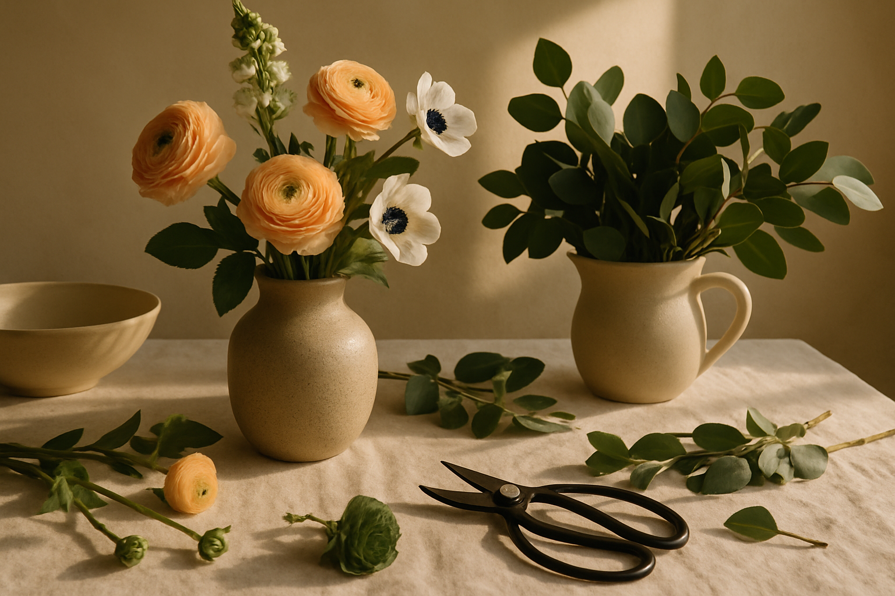
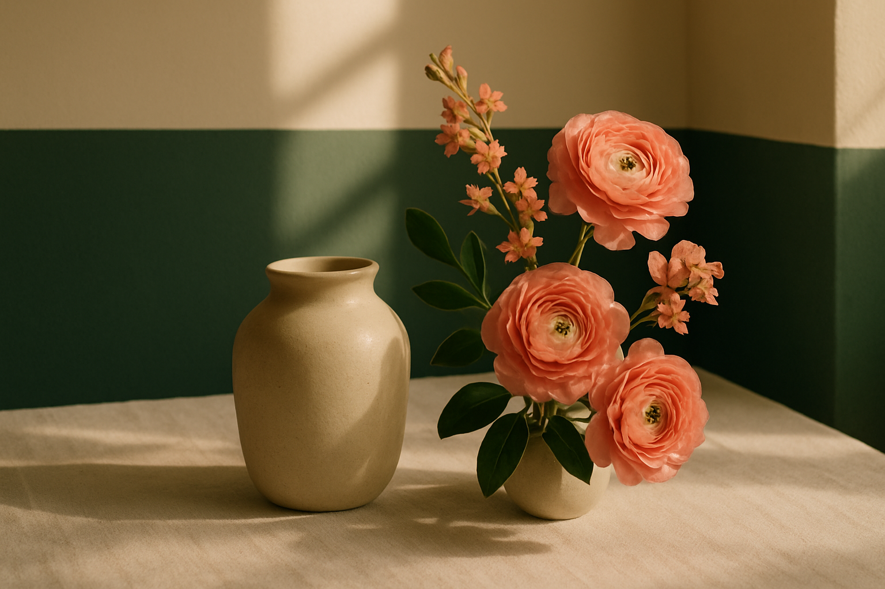

01
Placement
Note where the flowers will sit, how they will be viewed, and how much room surrounds them.
Planning guide
Use this visual guide to consider placement, proportion, and palette before confirming details with the business.
Explore IdeasPlanning notes
Begin with the setting and the practical choices that can shape a clearer floral conversation.

01
Note where the flowers will sit, how they will be viewed, and how much room surrounds them.
02
Compare the vessel opening, table depth, and nearby objects to find a useful sense of scale.
03
Bring a small set of color references and decide whether contrast or tonal harmony matters most.

Practical guidance
Consider the vessel, final placement, travel needs, and the colors already present in the setting. A few clear references can be more useful than a large collection of unrelated images.
Before planning
Service and availability details are not confirmed. Verify services, timing, location, and the preferred contact route directly with the business.